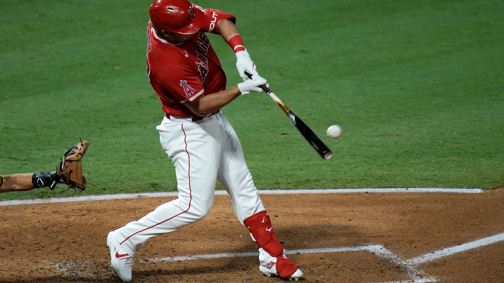

|

Why Bat Speed Determines How Good You Are Article Link |
How to Increase Bat Speed by 10% Article Link |
|
What Elite Power Hitters Have in Common Article Link |
How Important is Strength for Bat Speed? Article Link |
|
Does Medicine Ball Work Increase Bat Speed? Article Link |
Is Creatine Safe and Effective For Building Muscle? Article Link |